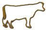
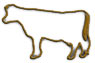
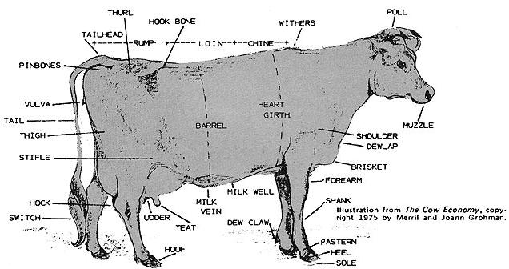

"Only three things a young feller's got to git to start hisself a farm," some old-timers used to say, "a piece of dirt, a cow, and a wife . . . and he don't strictly need that last one."
Ahem. Yes, well. Times have changed. But there's sound advice to be found in that bit of chauvinism from the past, and today's homesteaders would do well to consider what great-grandpa was really saying: that next to land itself, there's nothing more indispensable to a family farm than a good dependable milk cow. And if you don't agree now, you probably will by the time you've finished the first chapter of Merril and Joann Grohman's recently released book on the subject.
The Grohmans, you see, have a pretty good grasp on what it takes to become at least partially self-sufficient. They've been there . . . and still are, on a spread up in southwestern Maine. And one of the lessons they've learned from rural life is that there's much to be said for the food, fertilizer, and cash money that can be had by keeping and caring for at least one productive dairy animal. What's more, they've come to the conclusion-after trying all the options (including goats)-that that "one productive dairy animal" should be . . . the soulful-eyed Jersey.
In case you don't know, jerseys first came to this country from an island of the same name off the coast of France. And as the Grohmans are quick to point out, the strain is smaller than any other, has a longer lactation life, consumes less feed, produces 12 tons of valuable nitrogen-rich manure and urine every year, and yields milk (600-1,000 gallons annually) that's highest among all breeds in terms of butterfat, vitamin, and mineral content.
And, say Merril and Joann, the Jersey is an especially adaptable creature that can be put to pasture on rocky, hilly soil that can't be used for crop production and might otherwise lie fallow (which pretty much blows away the common argument that keeping any cow is "wasteful" because it yields less food than might be harvested if the pasture such an animal requires were sown in vegetables instead).
The Grohmans have called their book The Cow Economy, and have done nothing short of a superior job of explaining just how and why a Jersey can be the basis of real self-sufficiency for anyone with a tiny piece of land (or even just a garage that can be converted to a stall).
In fact, it's difficult to imagine any aspect of the subject that Merril and Joann have not covered: There are detailed chapters on buying, housing, feeding, milking, handling, breeding, calving, treating, and grazing a Jersey . . . and still others on making and selling dairy products, harvesting hay for feed, and using manure to enrich garden soil. There's even a section that explains how to take a vacation and provide good care for Ole Bossie while you're gone.
In other words, The Cow Economy is well-nigh all-inclusive. If you've been looking for an inexpensive way to raise food and money on the homestead, look no more. One of the best home enterprises of them all is explained right here.
You're not likely to find The Cow Economy at your local bookstore, but you will find it in your mailbox if you send $3.95 to the Grohmans (at Coburn Farm Press, Box M, Star Route, Dixfield, Maine 04224) and wait a week or so. You can bet your back forty that you'll be glad you did.
|
 |
 |
 |